# 패키지 설치
pacman::p_load("evir")
# 데이터 불러오기
data(bmw, package = "evir")
# 시계열 그림
plot(bmw, type = "l")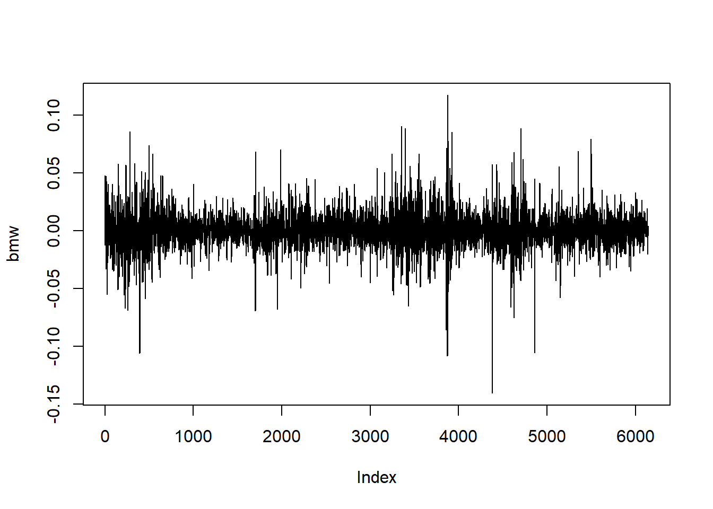
| 함수 | 설명 |
|---|---|
arima() |
AR모형의 차수 \(p\)를 지정하여 모형 구축 |
auto.arima() |
모형의 차수 지정없이 자동적으로 최적화된 모형 구축 |
adf.test(), pp.test(), kpss.test() |
단위근 검정 |
acf() |
상관도표그림 |
pacf() |
부분상관도표그림 |
Box.test() |
Ljung-Box Test |
checkresiduals() |
잔차가 백색잡음과정의 가정을 만족하는지 확인할 때 사용 |
forecast() |
예측 |
"evir"에서 제공하는 BMW 데이터셋은 1973년 1월부터 1996년 7월 사이에 BMW 주식의 일별 로그 수익률에 대한 시계열 데이터셋이다.# 패키지 설치
pacman::p_load("evir")
# 데이터 불러오기
data(bmw, package = "evir")
# 시계열 그림
plot(bmw, type = "l")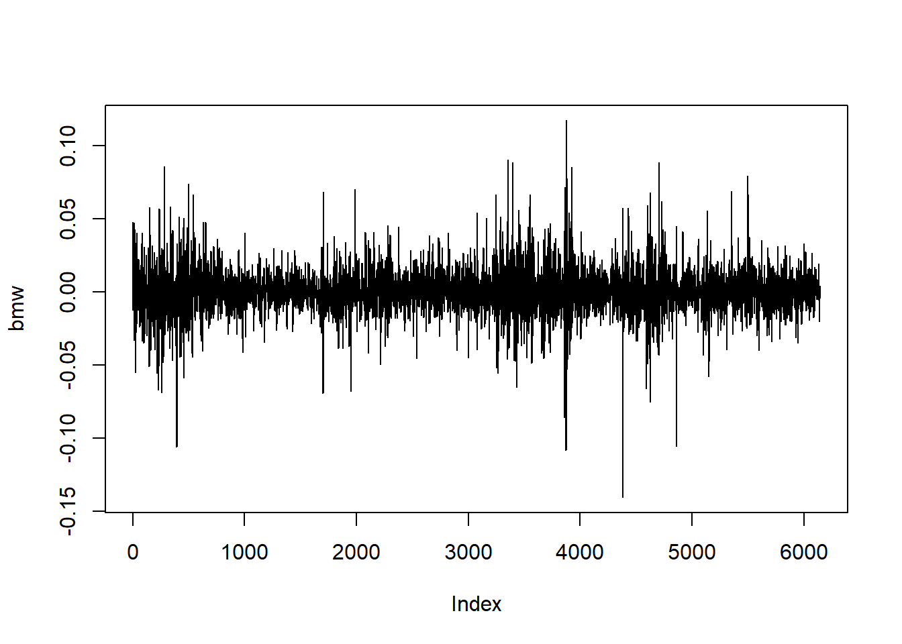
Result! 증가하거나 감소하는 추세가 없어서 시간의 흐름에 따라 평균이 일정하다.
# 상관도표그림
acf(bmw)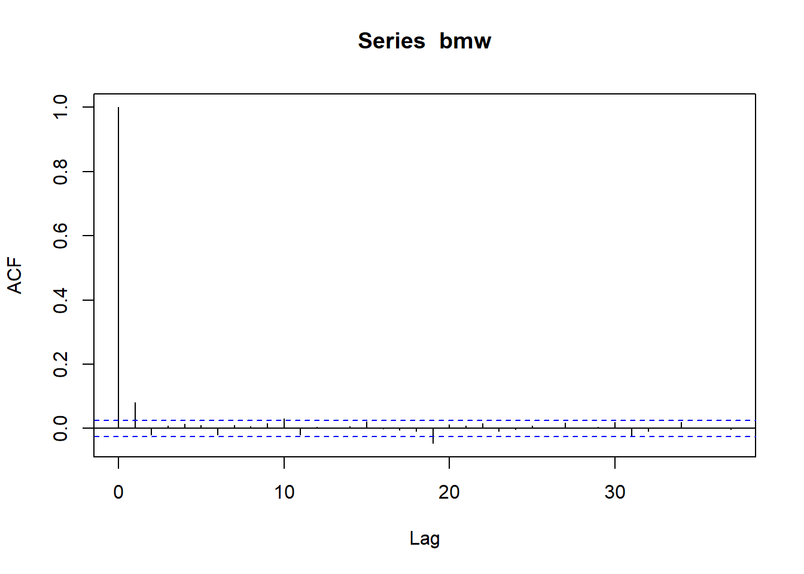
Result! 시차 1에서 막대의 끝이 파란색 선을 넘어가므로 시차 1에 대해 유의한 자기상관관계가 존재한다.
# 부분상관도표그림
pacf(bmw)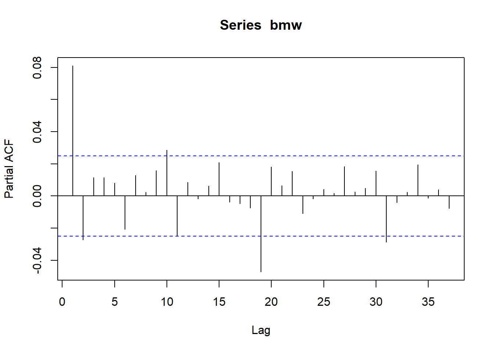
Result! 시차 1에서 막대의 끝이 파란색 선을 넘어가므로 시차 1에 대해 유의한 부분자기상관관계가 존재한다.
Caution! 큰 시차에서의 막대 끝이 파란색 선을 넘어가는 것은 우연 변동에 의한 가능성이 높다.
# Ljung-Box Test
Box.test(bmw, lag = 5,
type = "Ljung-Box")
Box-Ljung test
data: bmw
X-squared = 44.987, df = 5, p-value = 1.46e-08Result! 귀무가설 \(H_0 : \rho(1)=\rho(2)=\cdots=\rho(5)=0\)에 대한 검정 결과에 따르면, \(p\)값이 0에 가까우므로 유의수준 0.05에서 귀무가설을 기각한다. 즉, 관측된 시계열에 대해 \(\rho(1), \rho(2),\cdots,\rho(5)\) 중 유의한 자기상관관계가 적어도 1개 존재한다.
# Fit AR(1)
AR.bmw <- arima(bmw,
order = c(1, 0, 0)) Caution! 함수 arima()를 이용하여 AR(1) 모형을 구축하려면 옵션 order = c(1, 0, 0)을 입력한다. 만약, AR(\(p\)) 모형을 구축하려면 옵션 order = c(p, 0, 0)을 입력하면 된다.
# 모형 추정 결과
print(AR.bmw)
Call:
arima(x = bmw, order = c(1, 0, 0))
Coefficients:
ar1 intercept
0.0811 3e-04
s.e. 0.0127 2e-04
sigma^2 estimated as 0.0002163: log likelihood = 17212.34, aic = -34418.68Result! 출력 결과를 요약하면 다음과 같다.
1. 모수의 추정치는 \(\hat{\mu}=0.0003\), \(\hat{\phi}=0.0811\), \(\hat{\sigma}^2_\epsilon = 0.0002163\)이다. 이를 이용하면 관측된 시계열에 대해 구축된 AR(1) 모형은 \(Y_t-0.0003 = 0.0811(Y_{t-1}-0.0003)+\epsilon_t\)이다.
2. \({\phi}\)에 대한 유의성 검정을 수행하면, 검정통계량은 \(t = (0.0811/0.0127) \approx 6.39\)이며 귀무가설(\(H_0 : \phi=0\))하에서 자유도가 \(6145\) (관측값 \(- 1\))인 \(t\) 분포를 따르고 \(p\)값이 0에 가깝다. 이에 기반하여 유의수준 0.05에서 \(p\)값이 0.05보다 작기 때문에 귀무가설을 기각한다. 즉, \(\hat{\phi}\)의 값이 굉장히 작지만 \({\phi}\)는 통계적으로 유의하다.
3. \(\hat{\phi}\)의 값이 굉장히 작아 어제의 로그 수익률은 오늘의 로그 수익률에 큰 영향을 미치지 않는다. 다시 말해서, 오늘의 수익에서의 어떤 정보가 내일의 수익을 예측하는데 사용 가능하나 추정치가 너무 작아 예측이 그렇게 정확하지 않을 수 있다.
# 진차를 이용한 모형 진단
Box.test(residuals(AR.bmw), lag = 5,
type = "Ljung-Box",
fitdf = 1) # AR 모형의 추정한 회귀 모수 phi 개수
Box-Ljung test
data: residuals(AR.bmw)
X-squared = 6.8669, df = 4, p-value = 0.1431Caution! 잔차는 함수 residuals()를 이용하여 추출할 수 있다.
Result! 귀무가설 \(H_0 : \rho(1)=\rho(2)=\cdots=\rho(5)=0\)에 대한 검정 결과에 따르면, \(p\)값이 0.1431이므로 유의수준 0.05에서 \(p\)값이 0.05보다 크기 때문에 귀무가설을 기각하지 못한다. 즉, 잔차에 대해 시차 5까지의 자기상관계수 \(\rho(1), \rho(2), \cdots, \rho(5)\) 중 유의한 자기상관계수가 적어도 1개 존재한다는 증거가 부족하며, 해당 시계열에 대해 AR(1) 모형을 가정하는 것이 적절하다.
# 잔차에 대한 상관도표그림
acf(residuals(AR.bmw))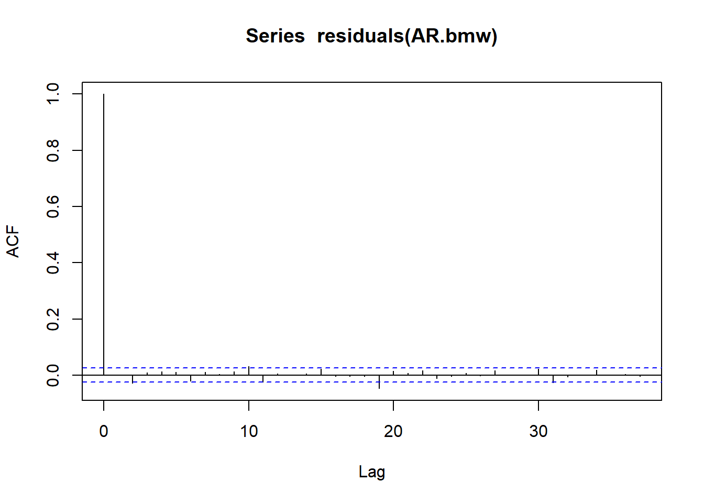
Result! 시차 1 이상에서 막대의 끝이 파란색 선 밖에 나가지 않으므로 유의한 자기상관계수가 존재한다는 증거가 부족하다. 큰 시차(예를 들어, 시차 19)에서 막대의 끝이 파란색 선 밖에 나가는 것은 우연 변동에 의한 가능성이 높다.
Caution! 관측된 시계열의 개수가 많은 경우, 큰 시차에서 유의한 자기상관계수가 존재할 수 있다.
# 진차를 이용한 모형 진단
Box.test(residuals(AR.bmw), lag = 15,
type = "Ljung-Box",
fitdf = 1) # AR 모형의 추정한 회귀 모수 phi 개수
Box-Ljung test
data: residuals(AR.bmw)
X-squared = 24.099, df = 14, p-value = 0.04457# 진차를 이용한 모형 진단
Box.test(residuals(AR.bmw), lag = 20,
type = "Ljung-Box",
fitdf = 1) # AR 모형의 추정한 회귀 모수 phi 개수
Box-Ljung test
data: residuals(AR.bmw)
X-squared = 39.299, df = 19, p-value = 0.00404"Ecdat"에서 제공하는 Mishkin 데이터셋은 1950년 2월부터 1990년 12월 사이에 인플레이션율에 대한 시계열 데이터셋이다.# 패키지 설치
pacman::p_load("Ecdat")
# 데이터 불러오기
data(Mishkin, package = "Ecdat")
y = as.vector(Mishkin[,1]) # 월별 인플레이션율 추출
y [1] -3.552289 5.247540 1.692860 5.064298 6.719322 11.668920 9.912501 8.346786 6.517766 4.865085 16.076321 19.154240 14.061910 4.650814 1.546310 4.627010 -1.540355 1.540355 0.000000
[20] 7.672257 6.102576 6.209472 4.533152 0.000000 -7.564866 0.000000 19.570490 -1.494151 1.494151 0.000000 -1.494151 0.000000 1.494151 0.000000 -1.494151 -2.993894 -6.010291 3.008908
[39] 1.501630 2.997634 4.482457 2.979029 2.971549 1.483071 2.960655 -4.443726 -1.484906 2.967978 -1.483071 -1.484906 -2.839906 2.839906 1.484906 0.000000 -1.484906 -2.839906 -2.982291
[58] 2.982291 -2.982291 0.000000 0.000000 1.492020 0.000000 0.000000 0.000000 2.978693 -2.978693 4.330177 0.000000 1.484906 -2.836390 0.000000 0.000000 2.836390 1.483071 5.914023
[77] 5.751562 8.774637 -1.457907 1.457907 5.682521 1.449363 2.893485 0.000000 2.886525 2.748830 2.873018 2.866156 7.006195 5.678584 1.415482 1.413814 0.000000 4.103441 0.000000
[96] 7.020216 1.399128 6.844860 2.777502 0.000000 1.386248 1.384744 0.000000 0.000000 1.383148 1.381556 -1.381556 1.381556 -1.381556 0.000000 1.381556 1.254555 5.504627 2.742874
[115] -1.370653 2.739743 3.973921 1.363010 -2.727571 1.364560 0.000000 6.799529 0.000000 2.586158 0.000000 0.000000 1.352397 5.394306 1.344819 0.000000 0.000000 1.343314 -1.343314
[134] 1.343314 0.000000 1.341812 5.230890 -1.335972 2.670459 0.000000 0.000000 0.000000 0.000000 2.664529 2.658626 2.532271 0.000000 0.000000 2.647071 0.000000 6.592472 -1.315600
[153] 0.000000 -1.317044 1.317044 1.315600 1.194725 0.000000 0.000000 5.242814 3.917133 0.000000 1.302875 1.183181 0.000000 2.598952 0.000000 0.000000 -1.298772 1.298772 2.593336
[172] 0.000000 2.587653 1.291782 -1.291782 2.582175 1.171857 2.574118 1.284992 -1.284992 0.000000 1.284992 3.846739 2.557659 6.254851 1.270154 -2.541654 2.541654 0.000000 2.536194
[191] 3.679570 0.000000 7.553715 2.393494 4.999561 0.000000 2.491991 2.486741 7.317456 1.233940 4.811423 0.000000 0.000000 0.000000 1.227743 2.451723 2.446724 3.549967 3.649961
[210] 4.849325 2.307577 3.617287 3.606416 2.289339 3.588767 4.768305 3.456034 4.735883 3.539687 4.596686 3.515803 3.399432 3.495549 3.485477 5.681739 3.458990 2.300467 3.338259
[229] 4.574945 6.726781 5.662605 3.282331 7.861482 3.252032 4.457231 4.339972 4.424734 5.408054 7.570396 2.182552 5.439077 3.153226 7.553640 4.197689 3.211568 5.236804 2.126986
[248] 4.242622 6.240278 4.110415 5.237093 2.088382 5.110830 5.183215 6.096802 5.041712 6.133401 2.962434 1.016681 1.015820 2.029064 1.013247 3.952596 1.009064 5.945445 3.007194
[267] 2.999539 2.901685 2.984980 2.977574 2.880218 4.934430 2.950948 3.834231 2.934329 5.758887 8.630559 11.440700 9.436906 6.536329 7.438794 3.659775 19.304211 1.838323 7.242186
[286] 8.105994 8.051480 9.785962 15.814170 12.122030 6.883693 12.010690 10.111450 7.566704 13.394280 12.342670 9.006326 9.680984 7.246837 4.855838 6.371189 4.738003 4.719480 5.566699
[305] 9.340268 12.388900 4.665991 5.350513 6.864336 6.061113 5.269925 3.040442 3.720887 3.778037 5.200997 6.673568 7.379198 5.857414 5.093520 5.072093 5.117023 3.575525 5.014266
[324] 6.435108 12.054450 6.336976 9.123064 6.255971 7.616233 4.105433 4.782352 2.760079 4.065748 5.420399 4.033883 6.056223 7.374409 8.668254 9.873637 10.451070 11.012750 5.793180
[343] 5.119508 7.025764 7.623123 6.306279 6.273224 9.946648 11.106510 10.389710 11.519510 13.766670 11.877010 9.987637 9.318593 10.410780 9.167216 6.281625 9.620259 14.005740 14.956960
[362] 14.772750 8.707769 10.170030 8.572340 7.396264 9.999892 11.967070 7.265405 7.174647 7.693233 10.614180 15.060890 9.936591 6.880011 7.334265 6.843737 9.197388 8.644333 9.498251
[381] 5.220479 4.722268 4.229963 6.531282 3.765132 1.835451 1.875277 8.318006 11.909480 8.179443 2.243804 5.880264 5.358331 1.808168 0.903063 2.664138 0.409372 0.818200 8.558391
[400] 6.479959 4.032262 4.820824 4.002672 5.979086 3.176779 1.981179 1.582568 6.702875 5.491976 2.736532 5.843219 3.492417 3.868475 3.856044 4.994358 5.737063 3.048542 0.000000
[419] 0.760985 2.279948 4.924980 5.281344 4.883469 4.490115 3.729027 1.860177 2.599458 3.703707 3.692311 4.048485 2.935736 3.659655 -3.293165 -5.508809 -2.579503 3.683244 5.869799
[438] 0.365932 2.193139 5.828813 1.089709 1.088720 1.087844 7.226761 4.308729 5.364409 6.405601 4.251591 4.236581 3.167622 6.310269 6.277260 3.126359 1.040348 0.000000 3.115431
[457] 3.107574 5.161263 6.164397 4.092111 5.095515 5.073969 5.052708 8.040197 3.999936 0.998057 1.993322 5.960278 4.944349 6.888122 7.823956 6.804426 2.904398 2.897386 1.927679
[476] 3.846190 5.746220 2.862824 1.904730 12.307830 5.638225 6.544558 1.863323 2.789618 6.484031 4.610040 10.992540 9.988676 7.212614 2.693695 0.000000# 시계열 ts 객체로 변환
y <- ts(y,
frequency = 12, # 1년에 12번 관측하는 월별 시계열열
start = c(1950, 2)) # 1950년 2월부터 관측
y Jan Feb Mar Apr May Jun Jul Aug Sep Oct Nov Dec
1950 -3.552289 5.247540 1.692860 5.064298 6.719322 11.668920 9.912501 8.346786 6.517766 4.865085 16.076321
1951 19.154240 14.061910 4.650814 1.546310 4.627010 -1.540355 1.540355 0.000000 7.672257 6.102576 6.209472 4.533152
1952 0.000000 -7.564866 0.000000 19.570490 -1.494151 1.494151 0.000000 -1.494151 0.000000 1.494151 0.000000 -1.494151
1953 -2.993894 -6.010291 3.008908 1.501630 2.997634 4.482457 2.979029 2.971549 1.483071 2.960655 -4.443726 -1.484906
1954 2.967978 -1.483071 -1.484906 -2.839906 2.839906 1.484906 0.000000 -1.484906 -2.839906 -2.982291 2.982291 -2.982291
1955 0.000000 0.000000 1.492020 0.000000 0.000000 0.000000 2.978693 -2.978693 4.330177 0.000000 1.484906 -2.836390
1956 0.000000 0.000000 2.836390 1.483071 5.914023 5.751562 8.774637 -1.457907 1.457907 5.682521 1.449363 2.893485
1957 0.000000 2.886525 2.748830 2.873018 2.866156 7.006195 5.678584 1.415482 1.413814 0.000000 4.103441 0.000000
1958 7.020216 1.399128 6.844860 2.777502 0.000000 1.386248 1.384744 0.000000 0.000000 1.383148 1.381556 -1.381556
1959 1.381556 -1.381556 0.000000 1.381556 1.254555 5.504627 2.742874 -1.370653 2.739743 3.973921 1.363010 -2.727571
1960 1.364560 0.000000 6.799529 0.000000 2.586158 0.000000 0.000000 1.352397 5.394306 1.344819 0.000000 0.000000
1961 1.343314 -1.343314 1.343314 0.000000 1.341812 5.230890 -1.335972 2.670459 0.000000 0.000000 0.000000 0.000000
1962 2.664529 2.658626 2.532271 0.000000 0.000000 2.647071 0.000000 6.592472 -1.315600 0.000000 -1.317044 1.317044
1963 1.315600 1.194725 0.000000 0.000000 5.242814 3.917133 0.000000 1.302875 1.183181 0.000000 2.598952 0.000000
1964 0.000000 -1.298772 1.298772 2.593336 0.000000 2.587653 1.291782 -1.291782 2.582175 1.171857 2.574118 1.284992
1965 -1.284992 0.000000 1.284992 3.846739 2.557659 6.254851 1.270154 -2.541654 2.541654 0.000000 2.536194 3.679570
1966 0.000000 7.553715 2.393494 4.999561 0.000000 2.491991 2.486741 7.317456 1.233940 4.811423 0.000000 0.000000
1967 0.000000 1.227743 2.451723 2.446724 3.549967 3.649961 4.849325 2.307577 3.617287 3.606416 2.289339 3.588767
1968 4.768305 3.456034 4.735883 3.539687 4.596686 3.515803 3.399432 3.495549 3.485477 5.681739 3.458990 2.300467
1969 3.338259 4.574945 6.726781 5.662605 3.282331 7.861482 3.252032 4.457231 4.339972 4.424734 5.408054 7.570396
1970 2.182552 5.439077 3.153226 7.553640 4.197689 3.211568 5.236804 2.126986 4.242622 6.240278 4.110415 5.237093
1971 2.088382 5.110830 5.183215 6.096802 5.041712 6.133401 2.962434 1.016681 1.015820 2.029064 1.013247 3.952596
1972 1.009064 5.945445 3.007194 2.999539 2.901685 2.984980 2.977574 2.880218 4.934430 2.950948 3.834231 2.934329
1973 5.758887 8.630559 11.440700 9.436906 6.536329 7.438794 3.659775 19.304211 1.838323 7.242186 8.105994 8.051480
1974 9.785962 15.814170 12.122030 6.883693 12.010690 10.111450 7.566704 13.394280 12.342670 9.006326 9.680984 7.246837
1975 4.855838 6.371189 4.738003 4.719480 5.566699 9.340268 12.388900 4.665991 5.350513 6.864336 6.061113 5.269925
1976 3.040442 3.720887 3.778037 5.200997 6.673568 7.379198 5.857414 5.093520 5.072093 5.117023 3.575525 5.014266
1977 6.435108 12.054450 6.336976 9.123064 6.255971 7.616233 4.105433 4.782352 2.760079 4.065748 5.420399 4.033883
1978 6.056223 7.374409 8.668254 9.873637 10.451070 11.012750 5.793180 5.119508 7.025764 7.623123 6.306279 6.273224
1979 9.946648 11.106510 10.389710 11.519510 13.766670 11.877010 9.987637 9.318593 10.410780 9.167216 6.281625 9.620259
1980 14.005740 14.956960 14.772750 8.707769 10.170030 8.572340 7.396264 9.999892 11.967070 7.265405 7.174647 7.693233
1981 10.614180 15.060890 9.936591 6.880011 7.334265 6.843737 9.197388 8.644333 9.498251 5.220479 4.722268 4.229963
1982 6.531282 3.765132 1.835451 1.875277 8.318006 11.909480 8.179443 2.243804 5.880264 5.358331 1.808168 0.903063
1983 2.664138 0.409372 0.818200 8.558391 6.479959 4.032262 4.820824 4.002672 5.979086 3.176779 1.981179 1.582568
1984 6.702875 5.491976 2.736532 5.843219 3.492417 3.868475 3.856044 4.994358 5.737063 3.048542 0.000000 0.760985
1985 2.279948 4.924980 5.281344 4.883469 4.490115 3.729027 1.860177 2.599458 3.703707 3.692311 4.048485 2.935736
1986 3.659655 -3.293165 -5.508809 -2.579503 3.683244 5.869799 0.365932 2.193139 5.828813 1.089709 1.088720 1.087844
1987 7.226761 4.308729 5.364409 6.405601 4.251591 4.236581 3.167622 6.310269 6.277260 3.126359 1.040348 0.000000
1988 3.115431 3.107574 5.161263 6.164397 4.092111 5.095515 5.073969 5.052708 8.040197 3.999936 0.998057 1.993322
1989 5.960278 4.944349 6.888122 7.823956 6.804426 2.904398 2.897386 1.927679 3.846190 5.746220 2.862824 1.904730
1990 12.307830 5.638225 6.544558 1.863323 2.789618 6.484031 4.610040 10.992540 9.988676 7.212614 2.693695 0.000000# 시계열 그림
plot(y, type = "l")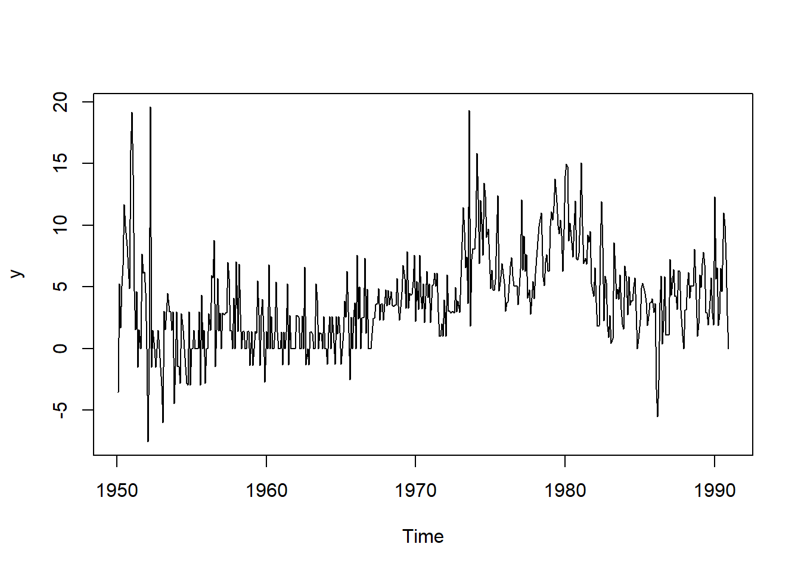
# 상관도표그림
acf(y)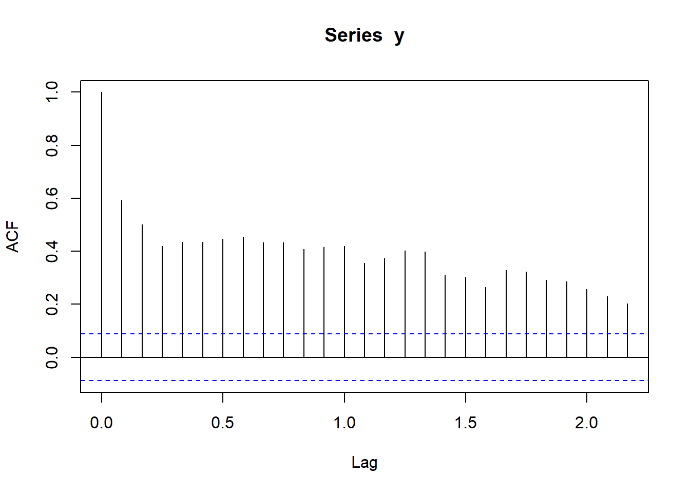
Result! 대부분의 시차에서 막대의 끝이 파란색 선을 넘어가므로 시차 25까지 유의한 자기상관관계가 존재한다.
# 부분상관도표그림
pacf(y)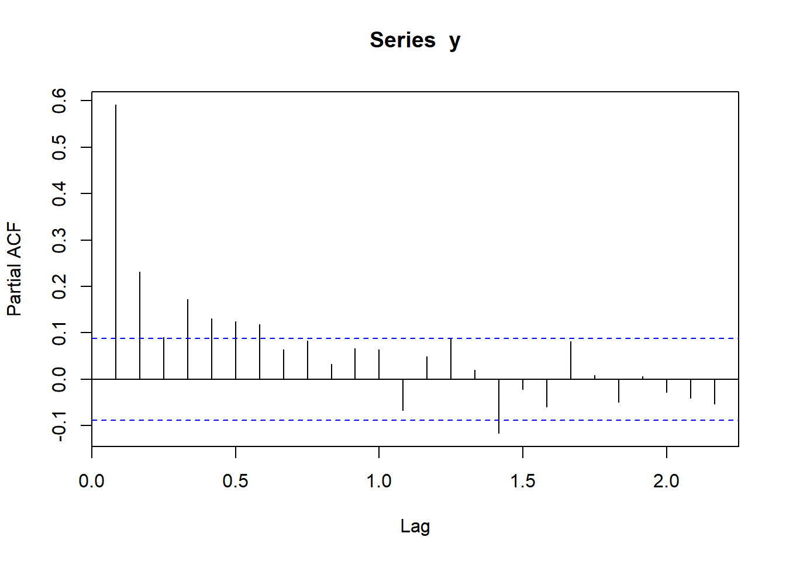
Result! 시차 7까지 막대의 끝이 파란색 선을 넘어가므로 시차 7까지 유의한 부분자기상관관계가 존재한다.
# Ljung-Box Test
Box.test(y, lag = 7,
type = "Ljung-Box")
Box-Ljung test
data: y
X-squared = 774.34, df = 7, p-value < 2.2e-16Result! 귀무가설 \(H_0 : \rho(1)=\rho(2)=\cdots=\rho(7)=0\)에 대한 검정 결과에 따르면, \(p\)값이 0에 가까우므로 유의수준 0.05에서 귀무가설을 기각한다. 즉, 관측된 시계열에 대해 \(\rho(1), \rho(2),\cdots,\rho(7)\) 중 유의한 자기상관관계가 적어도 1개 존재한다.
# Fit AR(1)
AR.y <- arima(y,
order = c(1, 0, 0))
# 진차를 이용한 모형 진단
Box.test(residuals(AR.y), lag = 5,
type = "Ljung-Box",
fitdf = 1) # AR 모형의 추정한 회귀 모수 phi 개수
Box-Ljung test
data: residuals(AR.y)
X-squared = 29.187, df = 4, p-value = 7.163e-06Result! 귀무가설 \(H_0 : \rho(1)=\rho(2)=\cdots=\rho(5)=0\)에 대한 검정 결과에 따르면, \(p\)값이 0에 가깝기 때문에 유의수준 0.05에서 \(p\)값이 0.05보다 작아 귀무가설을 기각한다. 즉, 잔차에 대해 시차 5까지의 자기상관계수 \(\rho(1), \rho(2), \cdots, \rho(5)\) 중 유의한 자기상관계수가 적어도 1개 존재한다는 것을 의미하며, 해당 시계열에 대해 AR(1) 모형을 가정하는 것은 적절하지 않다.
# 잔차에 대한 상관도표그림
acf(residuals(AR.y))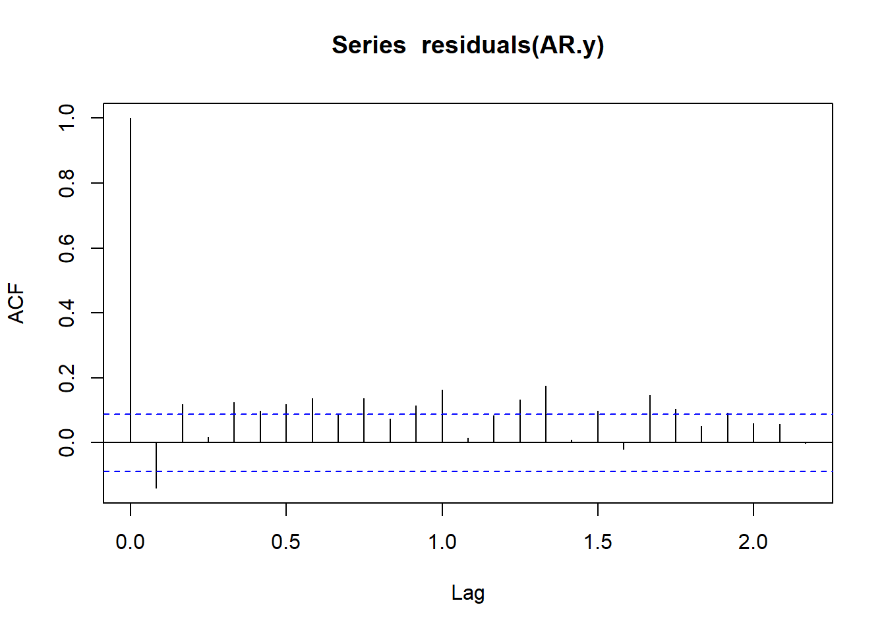
Result! 시차 1, 2, 4, 5, 6, 7 등에서 막대의 끝이 파란색 선을 넘어가므로 해당 시차에서 자기상관계수는 통계적으로 유의하다.
Caution! Package "forecast"에서 제공하는 함수 auto.arima()에 옵션 max.p = 20, max.q = 0, d = 0을 입력하여 최적의 AR(\(p\)) 모형을 찾을 수 있다.
# 함수 auto.arima() 이용
pacman::p_load("forecast")
auto.ar.y <- auto.arima(y, max.p = 20, # AR(1) ~ AR(20) 모형을 후보로 둠
max.q = 0, d = 0,
max.P = 0,
max.Q = 0,
max.D = 0,
ic = "bic") # BIC 기준으로 BIC가 가장 작은 모형을 최적 모형으로 선택
print(auto.ar.y)Series: y
ARIMA(2,0,0) with non-zero mean
Coefficients:
ar1 ar2 mean
0.4584 0.2297 3.9549
s.e. 0.0442 0.0442 0.4365
sigma^2 = 9.262: log likelihood = -1241.92
AIC=2491.84 AICc=2491.92 BIC=2508.62Result! 관측된 시계열에 대해 BIC를 기준으로 최적의 모형은 AR(2) 모형이다. 모수 추정 결과에 따르면, \(\hat{\mu} = 3.9549\), \(\hat{\phi}_1=0.4584\), \(\hat{\phi}_2=0.2297\), \(\hat{\sigma}^2_\epsilon = 9.262\)이다. 이를 이용하면 관측된 시계열에 대해 구축된 AR(2) 모형은 \(Y_t-3.9549 = 0.4584(Y_{t-1}-3.9549)+0.2297(Y_{t-2}-3.9549)+\epsilon_t\)이다.
# 진차를 이용한 모형 진단
Box.test(residuals(auto.ar.y), lag = 10,
type = "Ljung-Box",
fitdf = 2) # AR 모형의 추정한 회귀 모수 phi 개수
Box-Ljung test
data: residuals(auto.ar.y)
X-squared = 23.4, df = 8, p-value = 0.002887Result! 귀무가설 \(H_0 : \rho(1)=\rho(2)=\cdots=\rho(10)=0\)에 대한 검정 결과에 따르면, \(p\)값이 0.002887이므로 유의수준 0.05에서 \(p\)값이 0.05보다 작아 귀무가설을 기각한다. 즉, 잔차에 대해 시차 10까지의 자기상관계수 \(\rho(1), \rho(2), \cdots, \rho(10)\) 중 유의한 자기상관계수가 적어도 1개 존재한다는 것을 의미하며, 해당 시계열에 대해 AR(2) 모형을 가정하는 것은 적절하지 않다.
# 잔차에 대한 상관도표그림
acf(residuals(auto.ar.y))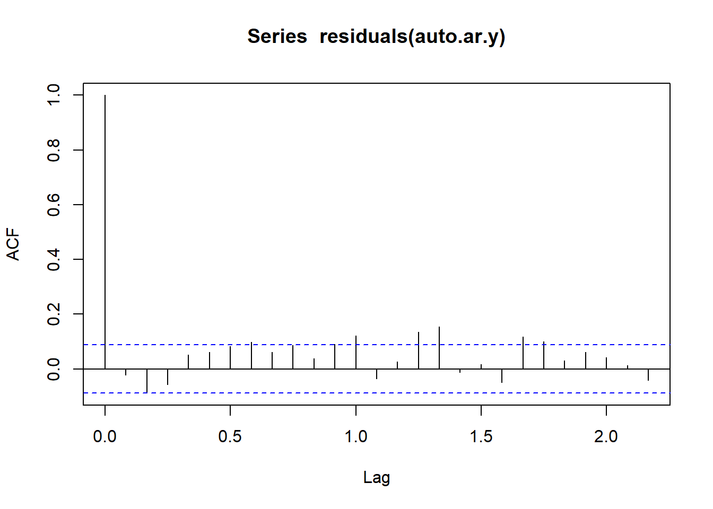
Result! 시차 7에서 막대의 끝이 파란색 선을 넘어가므로 해당 시차에서 자기상관계수는 통계적으로 유의하다.
# 함수 auto.arima() 이용
pacman::p_load("forecast")
auto.ar.y2 <- auto.arima(y, max.p = 20, # AR(1) ~ AR(20) 모형을 후보로 둠
max.P = 0,
max.Q = 0,
max.D = 0,
max.q = 0, d = 0,
ic = "aic") # AIC 기준으로 AIC가 가장 작은 모형을 최적 모형으로 선택
print(auto.ar.y2)Series: y
ARIMA(7,0,0) with non-zero mean
Coefficients:
ar1 ar2 ar3 ar4 ar5 ar6 ar7 mean
0.3655 0.1291 -0.0198 0.0986 0.0648 0.0798 0.1195 3.9868
s.e. 0.0453 0.0481 0.0484 0.0482 0.0485 0.0484 0.0458 0.7841
sigma^2 = 8.613: log likelihood = -1221.77
AIC=2461.55 AICc=2461.92 BIC=2499.32Result! 관측된 시계열에 대해 AIC를 기준으로 최적의 모형은 AR(7) 모형이다. 모수 추정 결과에 따르면, \(\hat{\mu} = 3.9868\), \(\hat{\phi}_1=0.3655\), \(\hat{\phi}_2=0.1291\), \(\hat{\phi}_3=-0.0198\), \(\hat{\phi}_4=0.0986\), \(\hat{\phi}_5=0.0648\), \(\hat{\phi}_6=0.0798\), \(\hat{\phi}_7=0.1195\), \(\hat{\sigma}^2_\epsilon = 8.613\)이다. 이를 이용하면 관측된 시계열에 대해 구축된 AR(7) 모형은 \[
\begin{align*}
Y_t-3.9868 = & \; 0.3655(Y_{t-1}-3.9868)+0.1291(Y_{t-2}-3.9868)-0.0198(Y_{t-3}-3.9868)\\
&+ 0.0986(Y_{t-4}-3.9868)+0.0648(Y_{t-5}-3.9868)+0.0798(Y_{t-6}-3.9868) \\
&+0.1195(Y_{t-7}-3.9868)+\epsilon_t
\end{align*}
\] 이다.
# 진차를 이용한 모형 진단
Box.test(residuals(auto.ar.y2), lag = 10,
type = "Ljung-Box",
fitdf = 7) # AR 모형의 추정한 회귀 모수 phi 개수
Box-Ljung test
data: residuals(auto.ar.y2)
X-squared = 3.882, df = 3, p-value = 0.2745Result! 귀무가설 \(H_0 : \rho(1)=\rho(2)=\cdots=\rho(10)=0\)에 대한 검정 결과에 따르면, \(p\)값이 0.2745이므로 유의수준 0.05에서 \(p\)값이 0.05보다 크기 때문에 귀무가설을 기각하지 못한다. 즉, 잔차에 대해 시차 10까지의 자기상관계수 \(\rho(1), \rho(2), \cdots, \rho(10)\) 중 유의한 자기상관계수가 적어도 1개 존재한다는 증거가 부족하며, 해당 시계열에 대해 AR(7) 모형을 가정하는 것은 적절하다.
# 잔차에 대한 상관도표그림
acf(residuals(auto.ar.y2))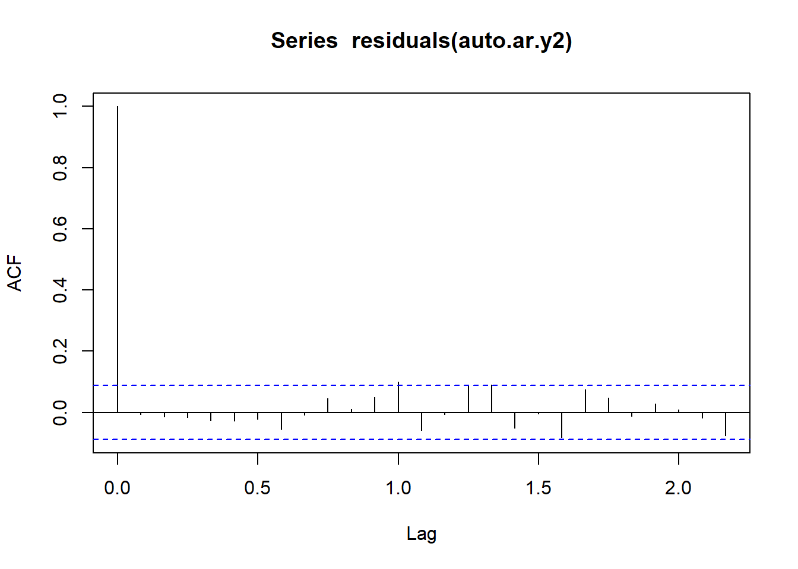
Result! 시차 1에서 10까지 막대의 끝이 파란색 선 밖에 나가지 않으므로 유의한 자기상관계수가 존재한다는 증거가 부족하다.